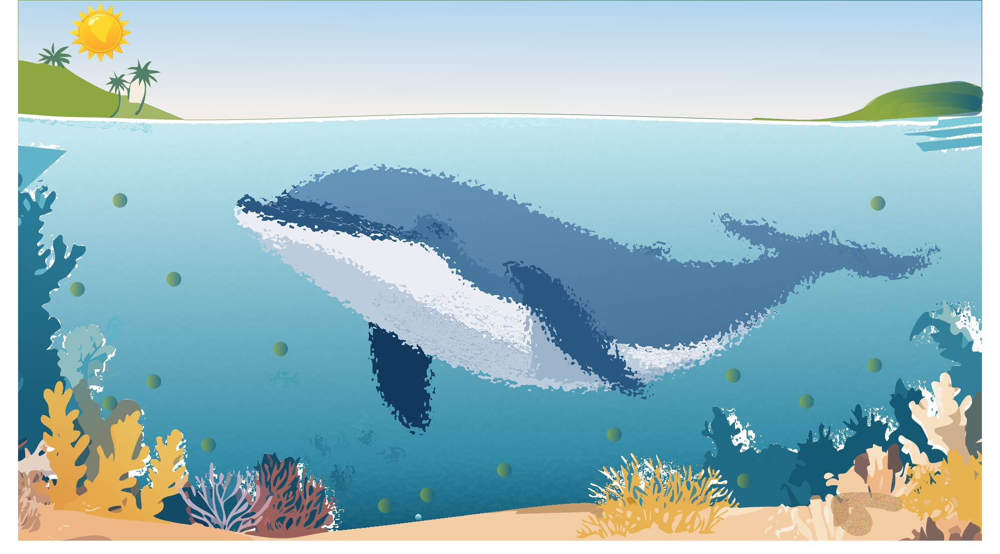

Beluga Whale Tours — Artwork Series
Digital artwork series; compositing & motion.
Artwork 1 - Beluga Whale Underwater.
This artwork sets the tone for the series by presenting a tranquil underwater scene. The textures and gradients align with the serene arctic theme throughout the artwork.
Artwork 2 - Beluga Pod in Arctic Waters.
This piece connects to the series by portraying the arctic habitat of Beluga whales. The geometric iceberg patterns echo other artworks' clean, structured design elements.
Artwork 3 - Underwater View.
This artwork expands the underwater theme of the series, complementing the first piece. The textures and colours connect stylistically with the serene yet vibrant underwater environment.